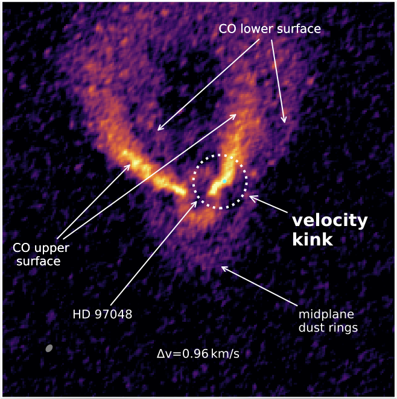

Hiding Signatures of Gravitational Instability in Protoplanetary Discs
Sahl Rowther, Farzana Meru, Grant M. Kennedy, Rebecca Nealon, Christophe Pinte
Hover on  blue text for more information.
blue text for more information.
Impact of planet on disc structure
The presence of the planet significantly impacts the structure. The planet suppresses the spiral structure and opens up a gap. Despite both discs retaining the same disc mass (~0.09M⊙) within 200AU, the 2D Q plots show that the presence of the planet results in the disc becoming mostly gravitationally stable with Q > 1.7 throughout the disc. Without a planet, strong gravitationally unstable (Q < 1.7) arms are present (see Figure 1).
The dominant reason for the increase in Q is due to the planet's influence on the disc temperature, or equivalently the sound speed cs, in the disc (see Figure 2). The spiral wakes generated by the planet as it migrates are regions of relative overdensities with respect to the disc background. The radially propagating spiral wakes can evolve into shocks. The exchange of momentum and energy between the density wakes and the disc at the shocks influence the global properties of the disc, heating it up.
Mock ALMA continuum observations
To check if this was observable with ALMA, we created mock observations at 1.3mm. From the mock observations in Figure 3, it can be seen that without a planet, spiral arms due to gravitational instability would be readily apparent. Whereas with the planet, the only major non-axisymmetric feature that remains are the spiral arms caused by the planet.
Implications
This has important implications for observations. In some observations of axisymmetric discs, the observed dust mass can be high enough such that inferring the gas mass via a fixed dust-gas mass ratio results in a disc that is massive enough to be gravitationally unstable. But, a gravitationally unstable disc is expected to show spiral structure. Therefore in the absence of spiral structure, a higher dust-gas mass ratio is assumed when modelling the disc to ensure a less massive gravitationally stable disc. However this assumption is unnecessary as in the presence of a giant planet, we show that spiral structures expected from massive discs can be suppressed, thus appearing axisymmetric.
Presence of the planet in the disc kinematics
The gas kinematics can also be used to infer the presence of a planet. In general, the disc kinematics are dominated by Keplerian rotation. However if a disc is gravitationally unstable or a massive enough planet is present, there will be deviations from the Keplerian flow of the disc. In the case of a planet, the deviations from the Keplerian flow of the disc is localised near the planet’s location (Pinte et al. 2019).
Figure 4 shows the synthetic 13C16O J=3-2 emission at velocity ±0.5 km/s from systemic velocity, both with and without the planet. A kink is visible in the optically thin 13C16O in the negative velocity channel within the vicinity of the planet, see bottom right inset. The bend in the emission profile in the bottom right inset is referred to as the kink. This is contrasted with the smooth velocity profile without a planet in the bottom left inset.
We can exclude large scale perturbations or any azimuthally symmetric mechanisms since the kink is not seen in the opposite velocity channel where the profile remains smooth.